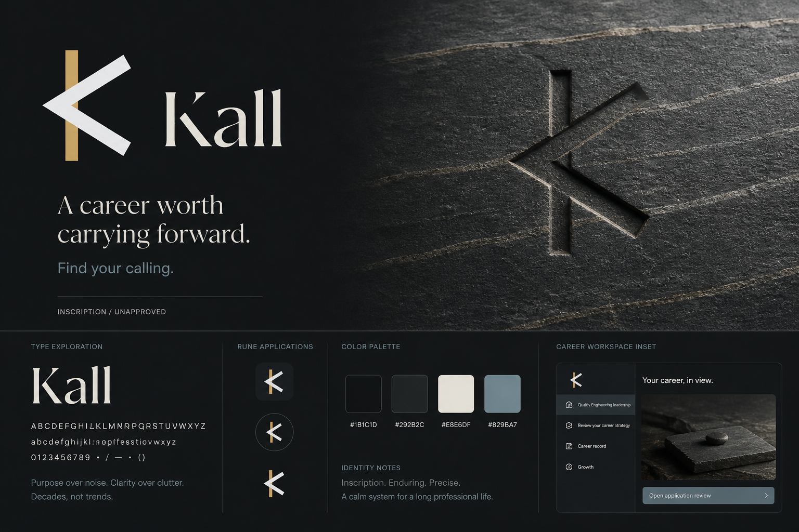

INSCRIPTION / DIRECTION SELECTED
James selected Inscription on 31 August 2026: the carved rune, cut-serif lettering and dark Nordic foundation. The corrected package contains three new boards, 24 candidate screens and eight current-style controls, with career strategy leading the Brief.
Open the corrected gallery →
Edition recommendation withdrawn. Round 01 lost too much of Kall's character. Its original assets remain historical and unapproved. Inscription is the selected identity direction. Detailed screen and navigation proposals still require review. No production brand file has changed.